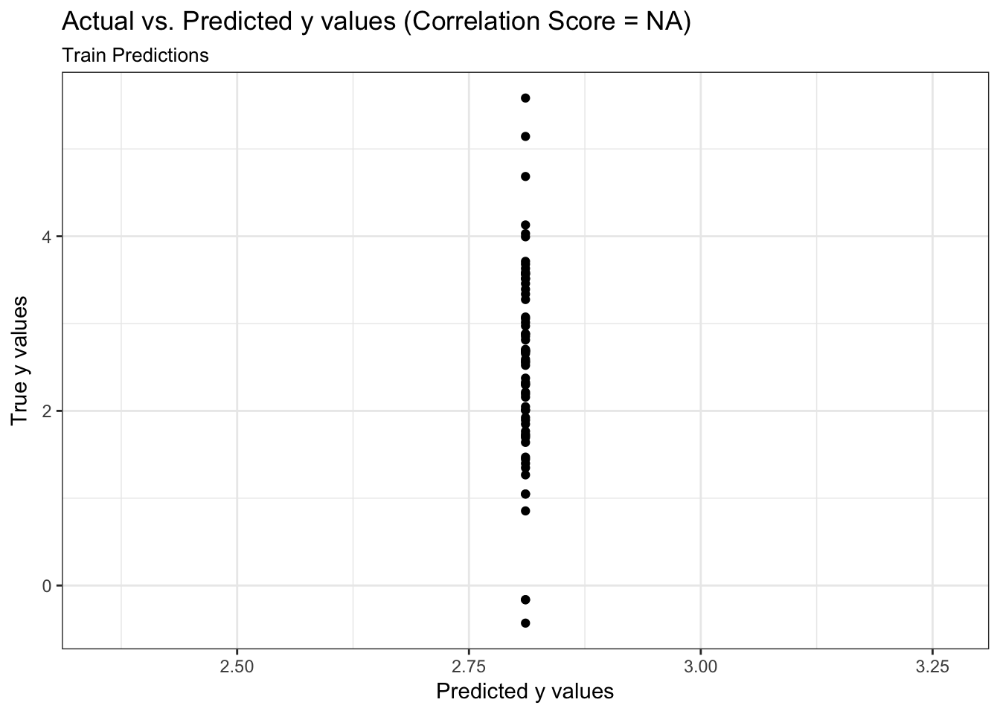
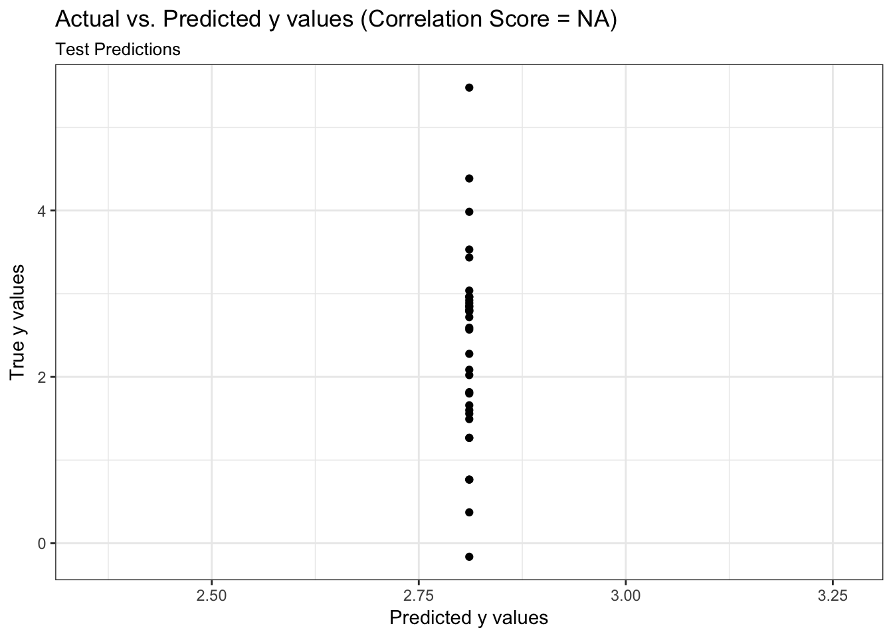
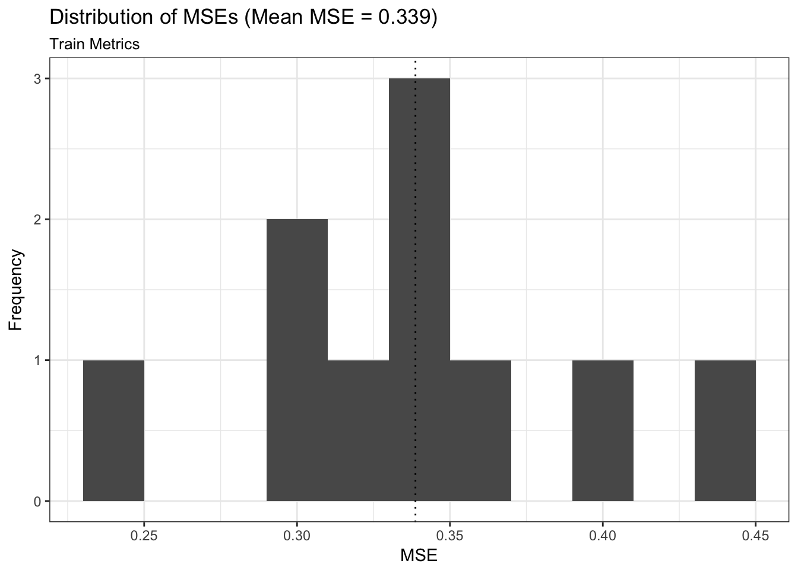
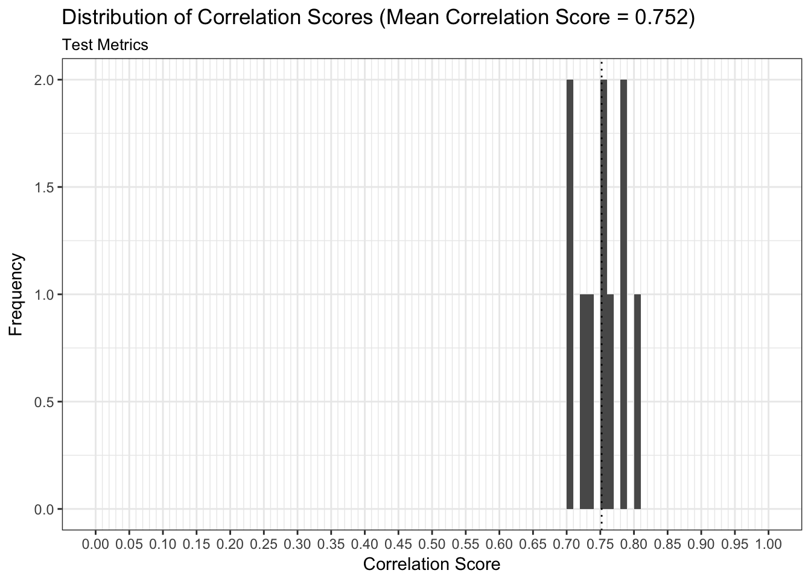

First we load our libraries and the Prostate dataset.
library(easyml)
library(dplyr)
library(ggplot2)
data("prostate", package = "easyml")
knitr::kable(head(prostate))| lcavol | lweight | age | lbph | svi | lcp | gleason | pgg45 | lpsa |
|---|---|---|---|---|---|---|---|---|
| -0.5798185 | 2.769459 | 50 | -1.386294 | 0 | -1.386294 | 6 | 0 | -0.4307829 |
| -0.9942523 | 3.319626 | 58 | -1.386294 | 0 | -1.386294 | 6 | 0 | -0.1625189 |
| -0.5108256 | 2.691243 | 74 | -1.386294 | 0 | -1.386294 | 7 | 20 | -0.1625189 |
| -1.2039728 | 3.282789 | 58 | -1.386294 | 0 | -1.386294 | 6 | 0 | -0.1625189 |
| 0.7514161 | 3.432373 | 62 | -1.386294 | 0 | -1.386294 | 6 | 0 | 0.3715636 |
| -1.0498221 | 3.228826 | 50 | -1.386294 | 0 | -1.386294 | 6 | 0 | 0.7654678 |
To run an easy_support_vector_machine model, we pass in the following parameters:
prostate,lpsa,gaussian or a binomial model,preprocess_scale to scale the data,results <- easy_support_vector_machine(prostate, "lpsa",
n_samples = 10, n_divisions = 10,
n_iterations = 2, random_state = 12345,
n_core = 1)## [1] "Generating predictions for a single train test split:"
## [1] "Generating measures of model performance over multiple train test splits:"Now let’s assess the results of the easy_support_vector_machine model.
We can examine both the in-sample and out-of-sample ROC curve plots for one particular trian-test split determined by the random state and determine the Area Under the Curve (AUC) as a goodness of fit metric. Here, we see that the in-sample AUC is higher than the out-of-sample AUC, but that both metrics indicate the model fits relatively well.
results$plot_predictions_single_train_test_split_train
results$plot_predictions_single_train_test_split_test
We can examine both the in-sample and out-of-sample AUC metrics for n_divisions train-test splits (ususally defaults to 1,000). Again, we see that the in-sample AUC is higher than the out-of-sample AUC, but that both metrics indicate the model fits relatively well.
results$plot_model_performance_train
results$plot_model_performance_test